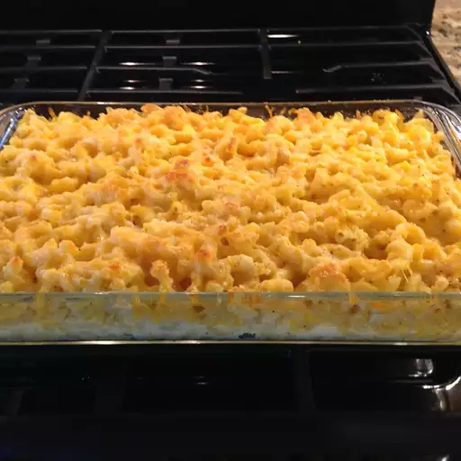

Baked Mac N' Cheese

This easy baked macaroni and cheese dish will make your guests beg for seconds!
We love baked mac n cheese
Ingredients
- macaroni
- milk
- eggs
- sour cream
- seasoning salt
- black pepper
- shredded cheddar cheese
- grate parmesan cheese
- butter
Steps
- Preheat the oven to 350 degrees F (175 degrees C). Lightly grease a casserole dish.
- Bring a large pot of lightly salted water to a boil. Add pasta and cook for 8 to 10 minutes, or until al dente; drain and rinse with cold water.
- Mix milk, eggs, sour cream, seasoning salt, and pepper in a bowl.
- Layer macaroni, Cheddar cheese, and milk mixture into the prepared casserole dish until full. Sprinkle Parmesan cheese and pour melted butter on top.
- Bake in the preheated oven until golden and bubbly, about 20 to 30 minutes.